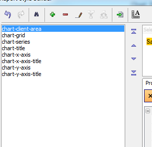
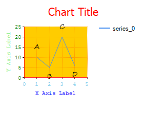
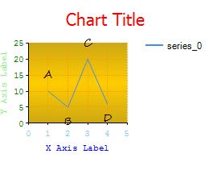
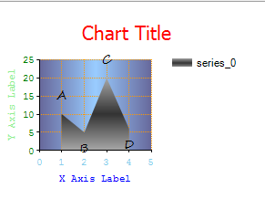

Chart Styles
The following styles apply to charts:

The elements are:
chart-client-area - this is the background on which the data is drawn - in this case a gold color background
chart-grid - this is the style of the grid lines on the chart - in this case, the grid lines are dotted & orange
chart-series - this is the font to use on the data points (series) on the chart - in this case, the font is a script (Segoe Script)
chart-title - this is the font to use on the title for the chart, in this case a 16pt tahoma set to color red.
chart-x-axis - font and color of text on the x-axis - in this case Sky-blue Courier text, border color denotes the color to use on the axis line - red in this example.
chart-x-axis-title - font and color to use for axis label, Blue courier in this case
chart-y-axis - font and color of text on the y-axis - in this case Green Courier text, border color denotes the color to use on the axis line - red in this example.
chart-y-axis-title - font and color to use for axis label, Light Green Courier in this case

The CSS for the above chart is:
chart-client-area {background-color:#ffcc00;} chart-grid {color:#ff9900;border-style:dotted;border-color:#ff9900;border-width:1px;} chart-series {font-family:Segoe Script;font-size:10pt;} chart-title {font-family:Tahoma;font-size:16pt;color:Red;} chart-x-axis {font-family:Courier New;font-size:8pt;color:Sky Blue;border-color:Red;border-width:1px;} chart-x-axis-title {font-family:Courier New;font-size:8pt;color:Blue;} chart-y-axis {font-family:Courier New;font-size:8pt;color:Green;border-color:Red;border-width:1px;} chart-y-axis-title {font-family:Courier New;font-size:8pt;color:Light Green;}
A note on the client area: we decode and support some of the Alpha Five gradients. So with this change:
chart-client-area { background: url('images/$box/$size/1x18/$fill/Gradient_Horizontal_Middle:%23204%2b167%2b20%3AGold.png.a5image') repeat-x top #d1ab11; }
You see a gradient:

Single series charts with a background (i.e. single series area charts and bar charts for example) and box plots support definition of a background for the series:

The two gradients used here are vertical blue gradients on the client-area and horizontal gray gradients on the series:
chart-client-area { background: url('images/$box/$size/16x1/$fill/Gradient_Vertical:Blue%20Gray%3APale%20Blue.png.a5image') repeat-y left #95c5f8; } chart-series { background: url('images/$box/$size/1x18/$fill/Gradient_Horizontal:%23170%2b170%2b170%3AGray%2d80.png.a5image') repeat-x top #393939; font: 10pt Segoe Script; }
See Also
ChartsChart API
Chart Control
Chart Component
Embedding Charts in Reports
Chart Alternate View
Using Charts on Forms
Using Charts in Xdialogs
a5_chart_data_url_generate Function